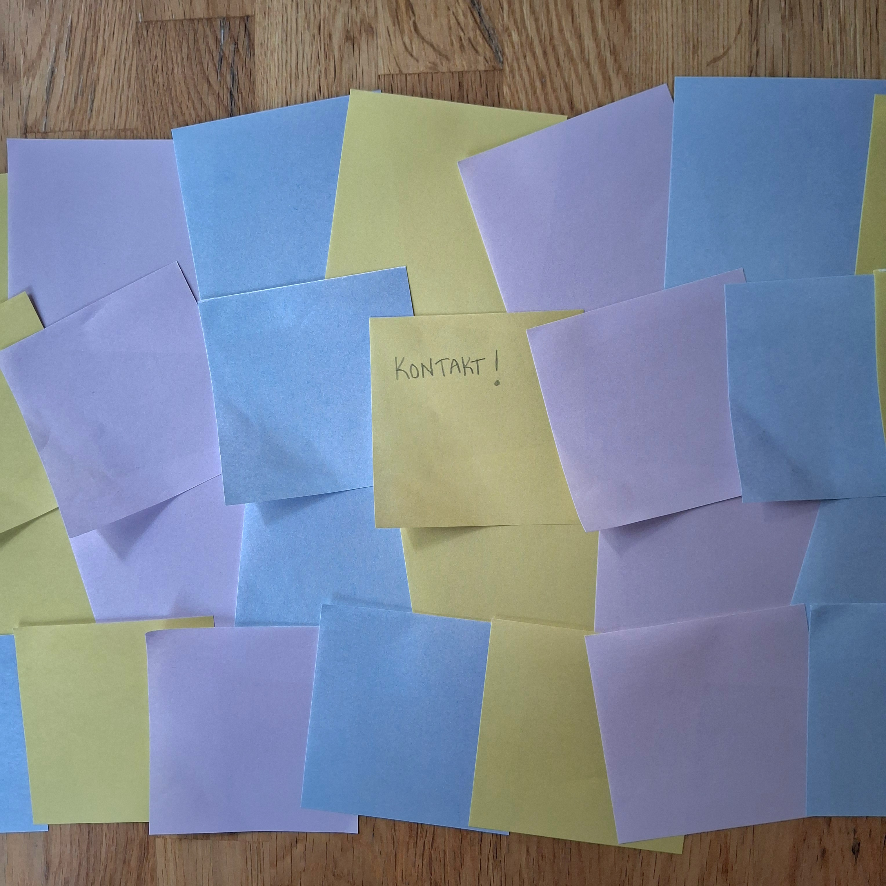
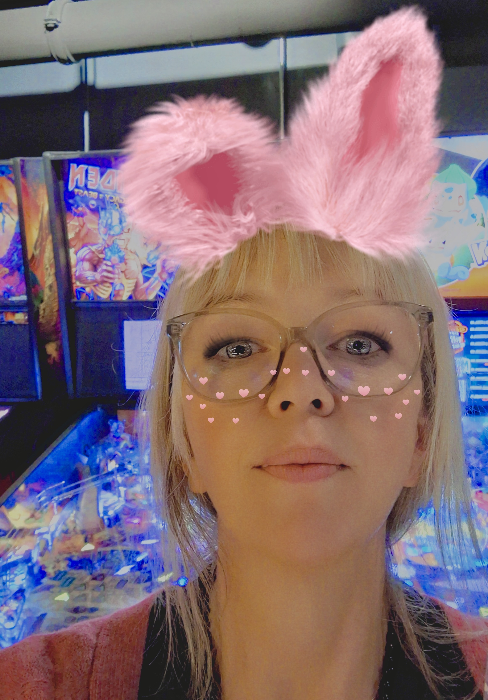

UXE-student | Bra på logik & design
Vad kul att du vill ta kontakt med mig!
Du kan nå mig på e-post: banjodietrich@hotmail.com
Mobil: 073-7591769
Hej! Vad kul att du vill veta mer om mig.
Jag studerar till UX-engineer på Chasacademy i Globen och blir klar i maj 2028. Mina styrkor är design och logik och mina långa erfarenhet inom socialt arbete gör att jag lätt kan förstå användarens perspektiv.
Här listar jag mina projekt löpande